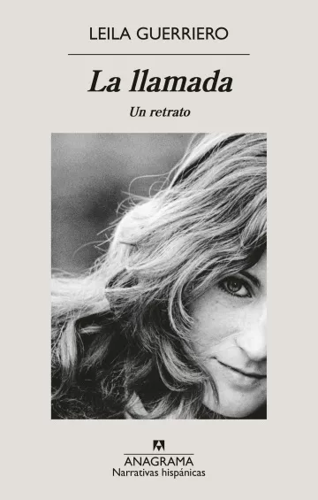

Música
Will Oldham, un grito mudo en la oscuridad de los 90
Por: Hugo Aguilar

Lectura
La llamada, de Leila Guerriero, o la memoria como latencia
Por: Sergio G. Colautti
20º Feria del Libro Juan Filloy
Por Andrés Natali
La llamada, de Leila Guerriero, o la memoria como latencia
Por: Sergio G. Colautti

“¡San Martín!” de Luis Polo
Moglia Ediciones, Corrientes, 2024
Por: Luis Benítez
Soñar castillos de justicia: Alberto Pinto (1937-1979), de Eduardo Escudero
Por: Mariana Gianotti

Palacio municipal

Plaza Julio Argentino Roca

Fotografía de la catedral Río Cuarto

Centro cultural del Andino

Ex tribunales

Parque Sarmiento

Maqueta del Museo del Riel

Museo histórico regional de Río Cuarto

Evento en Teatro Municipal

Teatro Municipal

Tintorería Japonesa

Viejo Mercado
Conversación con la ensayista y profesora emérita de la Universidad Nacional de Salta, considerada una de las principales referentes de la perspectiva descolonial sobre el sentir social que se vive en América Latina y, en particular, en Argentina.
Por Silvia Barei
En este diálogo con Zulma Palermo rescatamos pensamientos y sentires que la definen como intelectual y, fundamentalmente, como ser humano que no puede dejar de preguntarse - como opción ética- por las lógicas de impacto, de conmoción, de extrañeza que vivimos a diario en este sur del sur del mundo.
Porque Zulma Palermo vive en Salta (República Argentina) donde ha desarrollado toda su labor académica y su reflexión acerca de nuestros contextos históricos y nuestros entornos actuales. Forma parte de un colectivo de intelectuales latinoamericanos (“estudiosos indisciplinados”) dirigido por Walter Mignolo - Modernidad/colonialidad/descolonialidad- que busca, desde una epistemología de los bordes, de las periferias, repensar críticamente las formas eurocéntricas de leer las culturas latinoamericanas, concretando este objetivo mediante lo que se denomina “pensamiento decolonial” o, como señala Mignolo, “un activo abandono de las formas de conocer que nos sujetan”.
Condensaciones de su saber crítico son los libros Escritos al margen (1987) La región, el país (1987) Desde desde esta orilla (2005), Cuerpos de mujer (2006) y las compilaciones Para una pedagogía descolonial (2014) y De/descolonizar la Universidad (2015).
Referente indudable de la perspectiva decolonial en Argentina, mantuvimos con Zulma Palermo esta conversación en Salta, meses atrás.
Zulma Palermo, como dijo Dussel, ¿también siente que en usted habitan cuatro jóvenes de 20? Porque a mí me parece que sí.
Enrique Dussel, que sabía matizar sus diálogos jugando las ideas con cierta sabia picardía, lo dijo así en una conversación sostenida no mucho antes de que su cuerpo nos dejara. Lejos estoy de sus valores intelectuales, aunque tal vez su percepción esté ajustada al número de sus décadas, las mismas que llevo transcurridas y tal vez también por otro tipo de intereses porque no pregunta si “pienso” sino si “siento”. De modo, entonces, que trataré de satisfacer ese interés suyo desde mi sentipensar. Puede ser de algún modo cierto: he vivido ya casi un siglo persiguiendo la utopía de un mundo liberado de opresiones, intentando comprendernos/me como humanos hambrientos de un verdadero “buen vivir”.
Persiguiéndolo he transcurrido por casi todo el siglo XX y ya casi un tercio del XXI de mis días y en ese andar he venido sentipensándome/nos desde mi lugar andino, casi sin detenimiento, absorbiendo en cada etapa algo de lo que el campo cultural me proponía. Allá lejos, al mediar el viejo siglo, caminaba de la mano de quienes buceaban en las aguas de un latinoamericanismo sesentista, a veces con bastante esencialismo, otras con exagerado chauvinismo. Los acontecimientos se sucedieron y las respuestas que buscaba no fueron suficientes, por lo que se nos/me hizo necesario recorrer otros caminos; por entonces y contrastivamente, pareció que descubriendo las estructuras propias de nuestras sociedades formalizadas en sus lenguas y en la diversidad de los discursos circulantes acercarían más certezas. Fue éste el prolegómeno (¿tal vez imprescindible?) para la iniciación en la ruta bajtiniana, ruta con múltiples senderos que hacían posible comprender el sentido y la fuerza de las diferencias culturales ahora en compañía de muchos otros estudiosos de nuestras sociedades. Fue en la última década de ese siglo, cargado de conflictos y de incertidumbres renovadas, cuando todo lo que esas herramientas me brindaron allanaron el camino que me llevaría a participar en un telar en el que se empezaban a tejer saberes con otras maneras de pensar/haciendo hacia la renovación de la utopía. Quiero decir, como allá muy lejos en el tiempo postulaba J.C Mariátegui, que este presente especulativo resulta del entramado (competencias), de la maceración de todo lo que fue dando forma a mi experiencia entendiendo por ésta tanto los saberes académicos como los que me brindó la vida misma.
Hablemos de lo que suele denominarse un “ paradigma-otro”
No creo que pueda hablar de “paradigma” puesto que este “encuentro” con otras formas de comprender/hacer conocimiento no se instala como una construcción teórica que propone una/s verdad/es y que reclama/n un método a ser “aplicado” para encontrar un sentido ya hipotetizado. Es, es cambio, una manera de acercarse a la comprensión del mundo, “escuchando” lo que el mundo habla a través de la creatividad de quienes dan sentido a la sociedad en la que crecen a partir de la materialidad de sus productos. Es decir, de generar una semiosis totalmente abierta a lo que cada grupo, cada momento, cada lugar va construyendo en su dinámica, más allá (¿o más acá?) de proponer “universales” abstractos aplicables a cualquier forma de producción de cada sociedad en sus diferencias.
Se trata, entonces, no de la generación de un “nuevo paradigma” sino de apostar a maneras alternativas de conocer a las que propone la racionalidad moderna, en simultaneidad con ella, como una opción, no como un dogma. Para mí, que desde mediados del pasado siglo -como decía- estuve intentando conocer para comprender la cultura a la que pertenezco -la gran región que diseña la cartografía centrosudamericana- a través de sus productos literarios; de discutir con la “alta cultura”; de identificarme con esa enorme, mágica construcción carpenteriana mirándose/me como sujeto crítico de los paradigmas heredados del universalismo moderno-occidental, encontrarme con la forma de producir saberes que la opción ofrecía desde los últimos años del pasado siglo, fue decisivo.
Fue descubrir que fuera de Occidente también hay mitos, creencias, leyendas, sabiduría tan válidos como los de la “cultura culta” replicadora de modelos supuestamente universales. Que la “heterogeneidad” proclamada por el posestructuralismo/posmarxismo y replicada en nuestro campo intelectual discursivamente está aquí, nos es constitutiva y claramente perceptible en los objetos, decires, creencias, valores, sonidos, olores, sabores con los que convivo. Que mi persistente necesidad de comprensión no podía concretarse sino comprendiendo mi lugar, como punto de partida para darle valor en el contexto -hoy global- y esgrimirlo como instrumento de resistencia, precisamente contra el omnímodo poder que nos penetra. Que esta localización es siempre participativa, comunal, en vínculos recíprocos.
El lugar epistémico que en ese espacio fue tomando consistencia –llamado en los comienzos modernidad/colonialidad- se centraba en el análisis de los procesos por los cuales el “tercer mundo” sigue estando sujetado por el poder colonial. Comprobar que la sujeción que se padece sin solución de continuidad desde la Conquista fue siempre resistida y que esa historia reclama ser re-construida en los distintos lugares en que se concreta.
En ese proceso participó –y participa- un abanico muy abierto de estudiosos indisciplinados, de agrupaciones sociales, de comunidades originarias y de afrodescendientes procedentes todos de múltiples lugares físicos, culturales, raciales y de género. Cada quien enriqueciendo esa re-configuración con sus memorias y con sus competencias, sin organización institucional, sin sede física, sin autoridades formalmente reconocidas; en síntesis, por fuera de las regulaciones de los aparatos que caracterizan al pensamiento eurocentrado y a su producción/reproducción.
Ese proceso incorporó un tercer lexema a los dos primeros, “decolonialidad”, dando forma a un solo campo semántico “modernidad/colonialidad/decolonialidad”, así sin espacios en blanco, porque no se trata de “etapas” organizadas cronológicamente, sino que todas las “lecturas” del mundo se van dando simultáneamente. Se persigue así una reconstitución cognoscente de lo destituido por la modernidad/colonialidad abriendo simultáneamente el espacio gnoseológico para ir generando acciones y pensamiento decolonizantes. De allí tal vez que en los últimos años esta búsqueda circula mayoritariamente con la designación de “opción decolonial”.
Tengo para mí que cuando se visita-vive-habita esta búsqueda de conocimiento como una opción lo hacemos poniendo el énfasis en que se trata, precisamente, de una elección no sólo intelectual sino vital.
¿Por qué “historias locales”?
Como decía, fue importante en mi caso asumir la convicción de que pienso donde soy, invirtiendo el principio de la ratio cartesiana de la que buscamos desprendernos. Por eso la necesidad de re-constitución de las memorias locales, de las subjetividades a las que se pertenece ya sea por nacimiento o adopción como punto de partida y de llegada. Este lugar de enunciación –como antes esbozaba- está fuera de todo chauvinismo pues se nutre también en diálogo con saberes y tecnología de otros “locales de la cultura”; es aquél que diera fundamento a esta mi Universidad de Salta, en 1974, con la inscripción tallada en su escudo: “Mi sabiduría viene de esta tierra”; del “solo estar nomás” que sentipiensa Manuel J. Castilla, el poeta; del “estar-siendo” que descubren las andanzas especulativas de Rodolfo Kush.
Pensar para saber en donde soy como opción crítica no es solo afincar en telurismos acuñados en el paisajismo de expresiones folk, que son también parte valiosa en estas subjetividades; es participar en la construcción siempre dinámica de la sociedad en la que se es sólo y durante el limitado tiempo de una vida, que se va enlazando con muchas otras desde el ínfimo átomo que es cada existencia, a sabiendas de que, a la vez, este “lugar” integra –también a escala reducida- la gran cartografía planetaria.
Tiene un libro sobre pensamiento y prácticas feministas. ¿Cómo se vincula la idea de tejer saberes con las prácticas feministas del saber y el hacer?
Es curioso: en la circulación discursiva emergente de la teoría de la escritura se hizo frecuente utilizar la metáfora del tejido en su sentido etimológico, en una aproximación al entrecruzamiento de hilos en el armado de una trama. En nuestros haceres comunitarios hemos venido aprendiendo de culturas no occidentales, de base ágrafa, que la práctica misma del tejido ejecutado por manos femeninas después de un largo proceso de preparación de hilos, genera fuertes lazos entre quienes se reúnen en estas formas del hacer comunitario, dando forma a vínculos sostenidos en el tiempo a medida que los miembros de la comunidad reconstruyen la memoria social en los relatos contados oralmente. El tejido, entonces, no es acá una “figura del discurso” sino un-hacer-en-común con las manos y el relato, la memoria del grupo como un saber-de-sí. Llevado al plano de las conceptualizaciones esos saberes que nacen y crecen en cada grupo se engendran en el espacio conceptual por la especulación de mujeres en situación lugarizada doblemente: ser mujeres y, al mismo tiempo, habitando en la periferia del poder, pues implica una doble violencia patriarcal que se necesita desarticular, tan fuerte y consuetudinaria como la que se vive en el difícil entrecruzamiento de raza y género en un mismo cuerpo.
En el año 2002 escribió: “Los últimos brutales acontecimientos mundiales han puesto en emergencia los terribles disvalores de la humanidad…” ¿Y ahora, que todo parece estar peor? Las guerras, la pobreza, la destrucción del ambiente, las migraciones, la violencia…
Si apenas iniciado el siglo, con las inseguridades que generaba en ese momento el “cambio de Era” advertíamos la declinación de los valores que nos sostenían socialmente, hoy las dificultades para dar respuestas a estas inquietudes son enormes porque estamos viviendo una experiencia que pone al mundo “cabeza abajo” y en ese “vuelco” se está haciendo visible lo que se ocultaba desde el momento en que la expansión del poder hegemónico del capitalismo alcanzara dimensión planetaria. Los efectos del control ejercido sobre nuestras sociedades se están haciendo sentir cada vez más acelerada e intensamente ya que avanzamos sin pausa a la destrucción de la vida planetaria. Sea donde quiera se oriente nuestra mirada encontramos destrucción, desprecio por la vida, vaciamiento de sentido ético, violencia sin control.
Sin embargo, este mundo nuestro ha caído muchas veces en estados abismales y los pueblos han encontrado fuerzas para diseñar caminos de reconstrucción de sus valores. Esperemos, entonces, que algo así nos acontezca y nos encontremos en una nueva epifanía desde donde crecer en “buen vivir”.
i Descolonial o decolonial. Según algunos autores se habla de “descolonial” en plural y de “decolonial” en singular. Asimismo, la “decolonialidad” trataría de un proceso más inmediato y profundo que el de “descolonialidad”. Nota del editor.
Por Pablo Dema
Claudio LoMenzo i
Ediciones del Dockii , Buenos Aires, 2023
Por Luis Benítez
El sello argentino Ediciones del Dock publicó la tercera entrega del poeta, donde la primera persona del singular destila y ofrece condensadas las interacciones entre lo general y lo subjetivo.
En la década de los ’90 en la poesía argentina se difundía interesadamente como “novedad” -para ciertos lobbies editoriales y académicos porteños, así como algunos medios de comunicación- un discurso desangelado, individualista, carente de toda referencia social, sospechosamente proveniente, entre otros factores y en sus peores partes, de una lectura deficiente del minimalismo, esa que confunde “síntesis con chiquitito”. En no pocos casos, la tendencia degeneró en verdaderas puerilidades escritas e impresas. Hasta se habló de una impronta generacional que venía a acabar con la lírica, como si ello fuera posible.
Desde luego, para tamaña maniobra era imprescindible obviar cuanto no se alineara con el discurso buscado y encontrado en un segmento del género producido mayoritariamente en Buenos Aires, dejando de lado las muy diferentes búsquedas estéticas y logros discursivos generados en las 23 provincias del país y también en la misma capital argentina. Las voces desobedientes al mandato canonizante fueron en gran medida silenciadas, no difundidas y vanamente se probó de hacerlas callar.
Desde luego eso tampoco se logró y las autoras y autores disidentes continuaron escribiendo y publicando sus poemarios, sin que la emprendida marginalización rindiera fruto alguno. Es más: en muchos casos, los poetas de referencia y a treinta años de la intentona, fueron labrando un contra-canon -siempre hay uno- que acredita obras de muy genuina calidad y poéticas que continúan en pleno desarrollo hoy en día.
A estos disidentes de la buscada idiosincrasia noventista pertenece Claudio LoMenzo, autor de obra breve y espaciada publicación, pero trascendente ya desde su primer título, fechado en 1992.
Su último poemario, Prisionera tempestad (1), viene a nublar las diafanidades de las simples exposiciones de estados de ánimo y a soltar relámpagos y rayos suficientes para alumbrar, siquiera por un instante de la lectura, los rincones oscuros de la condición humana, allí donde se produce la encrucijada entre lo individual y lo colectivo. Muy adecuadamente selecciona la primera persona del singular para afrontar su propósito, subrayando así que la voz narrante es la de un yo enfrentado a su circunstancia particular pero también a las perplejidades, desencantos, incertidumbres y vacíos exógenos. Como dice el poeta en este fragmento del poema V (pág. 22):
“Diviso entre parpadeos:
imperceptibles angustias, oquedades,
rastros de eternidad y un viento denso.
Allí fuera ellos son los pilares de esta negrura,
que defienden en parte, su oscuridad conquistada.
La otra parte, confieso, es indivisible.
Y entre esa penumbra y la mía,
existe una euforia contenida.”
Poesía del enfrentamiento activo y el antagonismo pasivo entre ambos universos, el propio y el de la otredad, que sabe establecer la complementariedad entre ambos campos como mera tregua, aplazamiento antes de un nuevo choque frontal, la de Prisionera tempestad impresiona por la densidad alcanzada en tan breve trámite discursivo: se trata de condensar en solo veintitrés piezas las peculiaridades antes señaladas y cabe decir que LoMenzo lo logra en la mayoría de ellas, con notable manejo estilístico.
Como señaló alguna vez Thomas Stearns Eliot (1888-1965) “no hay facilidades en el verso libre para el muchacho trabajador”. Bien: Claudio LoMenzo es un verdadero trabajador de la palabra que conoce muy bien qué busca y dónde encontrarlo.
i Claudio LoMenzo nació en 1962 en la Ciudad Autónoma de Buenos Aires Argentina. Es ensayista, poeta y crítico literario en medios argentinos e internacionales. Estudió Filosofía en la Universidad de Salvador. Fue redactor del Suplemento Cultural “Ambito de los libros” del Diario Ámbito Financiero, Buenos Aires. Desde 1997 ininterrumpidamente codirige junto a Javier Magistris la Revista Nacional de Poesía: “La Guacha”, que se distribuye en los kioscos de diarios y revistas de Argentina. Participó con sus lecturas en numerosos encuentros nacionales y fue invitado a leer a la “Fundación Pablo Neruda” en Chile. Claudio LoMenzo publicó anteriormente el poemario Doble latido, en Editorial Vinciguerra (1992), Ciudad del presente, en Ediciones del Dock (2018), e integra el Tomo I, parte vigesimoctava de la Poesía Argentina Contemporánea, de Editorial Vinciguerra y Fundación Argentina para la Poesía (2023).
ii http://www.deldock.com.ar
Encuentro de diez poéticas argentinas en España
VV.AA.
Prólogo de Esther Peñas
Lastura Ediciones, Madrid, 2024
Por Jorge Rodríguez Hidalgo
La editorial española Lastura Ediciones acaba de publicar Palabra ya horizonte. Encuentro de diez poéticas argentinas en España. La obra, como el propio título indica, recoge una muestra del quehacer poético de diez autores argentinos que por diferentes motivos residen en España, donde han desarrollado el grueso de sus producciones, tanto líricas como narrativas, ensayísticas, periodísticas o editoriales. El volumen, organizado alfabéticamente, da cuenta de poetas nacidos entre 1942 (Ricardo Pochtar) y 1980 (Andrea Aguirre). Más que una forma aséptica de presentación de las obras, la ordenación parece rehuir los a priori que cada lector puede anteponer a las lecturas a fin de “encontrar” aquello que quizá los poetas no buscaban. De forma expresa: entre los años 70' del pasado siglo y la actualidad hay una grieta/herida que de una u otra forma ha condicionado a toda la sociedad argentina, la dictadura militar de tan infausta memoria y sangrientas consecuencias.
En el prólogo, titulado “El universo mismo como posibilidad del lugar”, Esther Peñas avisa de que estamos ante un libro colectivo, pero no una antología. Porque, efectivamente, una antología de poetas residente en España hubiera pedido a voces la incorporación de algunos vates de categoría contrastada (hago gracia de nombrar a ninguno para no desdorar ni el buen trabajo de la editora y prologuista ni a los poetas incorporados). Sin embargo, es dable preguntarse si existe algún nexo entre los diez poetas, además de la común residencia en España. Neus Aguado (Córdoba, 1955), Andrea Aguirre (Buenos Aires, 1980), Arturo Borra (Santa Fe, 1972), Aníbal Cristobo (Lanús, Buenos Aires, 1971), Emma Fondevila (Buenos Aires, 1943), Rodrigo Galarza (Caá Catí, Corrientes, 1972), Laura Giordani (Córdoba, 1964), Cristina Grisolía (Rosario, 1946), Viviana Paletta (Buenos Aires, 1967) y Ricardo Pochtar (Buenos Aires, 1942) no pueden ocultar en sus obras de dónde vienen, cuál es su identidad. Pero, a juicio de Esther Peñas, “escriben desde el postulado de que el universo no está en un lugar determinado, sino que el universo mismo es la posibilidad del lugar. No se trata de estar, sino de ir. Ir, claro, desde la falta, porque lo que no tenemos nos abre a la vida”. Esa falta de la Argentina natal tiene un nombre: exilio. Por razón de edad, no todos los poetas son exiliados de modo directo; algunos lo son porque forman parte de una familia que hubo de exiliarse. Sea como fuere, exiliados son, aunque cada cual viva “la falta” a su modo.
La poeta, narradora y crítica literaria Neus Aguado, residente en Barcelona desde la niñez, se lamenta de que “nunca más la primavera fue en septiembre/ ni hubo calor que anunciara el Año Nuevo”.
Residente en Madrid, también desde su infancia, la poeta, editora y pedagoga Andrea Aguirre escibe que “mis padres me contaron, hace años, cómo vieron caer los cuerpos desde un helicóptero al Río de la Plata”.
Arturo Borra, residente en Valencia, concluye que “no hay búsqueda que no sea/ pérdida: vivir en otro sitio”. Además, “crecimos en la derrota…// Una lejanía que no era nostalgia estalló en las manos”.
El poeta y traductor Aníbal Cristobo, residente en Barcelona, llega con el humor donde otros lo hacen con la descripción trágica. Así, “Hace unos días// Andrea subrayaba un libro/ que explicaba cómo arrojaban un puñado de plumas/ desde un globo aerostático, para saber si el globo/ estaba subiendo (si las plumas bajaban) o bajando/ (si subían). Nadie sabe// lo que puede un cuerpo”.
Emma Fondevila, poeta traductora y filóloga, afincada en Madrid desde el golpe de estado de 1976, dedica un emotivo poema “Para A. C., poeta desaparecido […] ¿Cómo encontrarte muerto entre los vivos?/ ¿Cómo sentirte vivo entre los muertos?” Con respecto al exilio, afirma que “atrás quedó lo irrenunciable:/ la vida/ los sueños./ Un tiro de muerte/ acabó con el asombro de la infancia...”
Profesor de Letras en Madrid, el poeta Rodrigo Galarza nos dice que “el temblor de las raíces agita una estrella/ todo regresa a los precipicios de la sangre/ y desde las cimas/ los recuerdos se suicidan hermosos”.
Adolescente aún, la poeta Laura Giordani, junto con su familia, salió de Argentina en 1978 a causa de la dictadura militar. Años más tarde, escribirá: “la tierra que no está en ninguna parte/ esta es la verdadera patria”.
Tras conocer París, Viena y Madrid, la poeta, activista social y defensora de los derechos de las mujeres Cristina Grisolía se estableció definitivamente en Vilanova i la Geltrú, una localidad costera al sur de Barcelona. Dobla el tiempo con el tiempo para persuadirse de que “no volveremos a cruzar las esquinas/ a transitar la diagonal del tango/ quebrada/ en el compás aquel donde chirrió el violín/ en tu cadera./ O tal vez sí solo volvamos a cruzar/ eternamente estas baldosas”.
Residente en Madrid, la poeta y filóloga Viviana Paletta reflexiona: “solo retornan las aves migratorias. No las exiliadas/ y su remolino alado”.
Cierra el libro el poeta y traductor Ricardo Pochtar, a quien el golpe de estado de 1976 sorprendió en Barcelona, donde se quedó antes de trasladarse a las Islas Baleares y posteriormente a Gijón (Asturias), ciudad en que reside actualmente. “Solo lo olvidado vuelve,/ solo lo que vuelve está”.
Esta somera muestra de versos invita a pensar que el exilio implica, por definición, un desarraigo, pero la vivencia que cada desterrado tiene del mismo relativiza sus efectos. Hay exiliados en su propia patria (exilio interior) y los hay que, voluntad mediante, buscan (y a veces encuentran) esa “posibilidad del lugar” a que se refiere Esther Peñas. La “Palabra ya horizonte”, que recoge el “Encuentro de diez poéticas argentinas en España”, es en sí misma el terruño verbalizado. Como escribe el poeta español Rafael Soler en su reciente poemario “Memoria y No” (2024): es “cuestión de léxico encontrar/ la meta del verbo y del afecto/ volver por las afueras/ al dentro perentorio”.
Por Claudio Asaad
Dice Diana Bellessi en uno de los pasajes de “La pequeña luz del mundo”, ¿Cuál es el miedo a la poesía? La hija subversiva y díscola de la lengua con una pirueta de exceso y una demanda de pureza. El poema nace en la violenta y amorosa acción que reclama a la lengua volver a hablar.
Hablar como un signo del poema, que necesita del sustrato del sonido del lenguaje para hacerse un lugar en la boca, en la escucha y en la herida.
¿De qué relación estamos hablando cuando nos referimos al vinculo del cine con la poesía? En el campo de los estudios del cine, de literatura, de filosofía del cine, se ha tratado de indagar sobre este tema que es una pregunta, en realidad un problema que no sé si hay que resolver, pero que, sí merece atención, merece que lo miremos con mucho placer, inquietud y al mismo tiempo atentos al tiempo, a la reconstrucción de un espacio escénico que se diluye sobre sí, que muta sobre su propio cuerpo. El cine ata a su temporalidad la maravillosa tendencia a explorarse a sí mismo para resquebrajar la tiranía del tiempo y de un espacio, el de la puesta en escena hasta convertirlo en un lienzo expresivo, una superficie/mundo en la que es posible dimensionar el poder de las ideas, la errática e intensa maquinaria de la siquis social. Basta con volver sobe las creaciones de los expresionistas alemanes, del cine surrealista de Buñuel, las criaturas lisérgicas de Man Ray, los lirismos de Jean Cocteau.
Nombrar a Ingmar Bergman y habitar el enigma.
Romper las normas, experimentar y elaborar un discurso con la lengua propia, desentramar el tiempo cinematográfico dilatando o comprimiendo su duración en la pantalla, aproximarse al discurso verbal de la poesía, intentar que lo metafórico se extienda a la construcción del discurso del cine, evitar los automatismos, desnaturalizar las continuidades, y sobre todo, hundir la piel de la pantalla, herirla hasta encontrar una zona de claroscuros desérticos para poblarlos de imágenes imposibles, o casi imposibles. Salir del relato, del discurso del cine, estallar el sentido en la médula del poema, allá donde se hace eco con una profundidad en abismo, donde toda pérdida es un encuentro con el otro, divino o no, pero excepcional.
Robarle al silencio su cuerpo mudo. Tarkovsky.
La búsqueda de Tarkovsky cala sobre el tiempo real en el tiempo del cine: Dice Bergman: “El sueño de Tarkovsky es absoluto, abarca la memoria y el tiempo y encuentra una dimensión metafísica.”
En “Esculpir en el tiempo” escribe el cineasta: “¿Cómo iba a imaginar durante el rodaje de ‘¿Nostalgia’ que aquel estado de tristeza aplastante y sin salida que marca toda la película, podría alguna vez ser el destino de mi propia vida?”
Una lengua propia, una precisa ausencia que cae por goteo sobre el paladar emocional del espectador. Cada encuadre, cada plano conforman con precisa armonía, con ritmo propio una poética acompañada por la cámara que se mueve sobre un punto de gravedad, por una banda de sonido que apenas cubre como la niebla la llegada de los símbolos.
La forma de poetizar es, proponiendo una promesa, que toda desolación será compensada por un pacto con la existencia, con un temblor cauto, pero sentido sobre lo inasible y su inefable vida, por fin, el poema.
Dice Hugo Mujica “El hombre es flecha de su arco (no su blanco)”
Elías
En 1964, Herbert Marcuse publicó este ensayo sobre la ideología de la sociedad industrial avanzada, que sigue gozando de plena y dramática actualidad.
Por Antonio Tello
Herbert Marcuse es uno de los filósofos más representativos de la llamada Escuela de Frankfurt, que, tras la Segunda Guerra Mundial, renovó y revitalizó el pensamiento marxista en consonancia con el desarrollo alcanzado por la sociedad industrial y su correlato, la sociedad de consumo. El hombre unidimensional (Ariel, 1981, 2010, trad. Antonio Elorza) es un ensayo cuya [re] lectura es imprescindible para comprender la realidad dada en la tercera década del siglo XXI.
Antonio Elorza, en el inteligente prólogo de la edición en castellano, afirma que Herbert Marcuse era a principios de los años setenta «el inspirador de los estudiantes encolerizados» y el «referente teórico central del nuevo espectro revolucionario que recorría Europa y América del Norte» y, añado, América Latina. Marcuse, como Adorno y McLuhan, en El hombre unidimensional señala la alienación del individuo como factor nuclear de la crítica a la sociedad capitalista fundada en el consumo de masas y la insatisfacción generada, progresivamente, por la deshumanización de lo que ha dado en llamar «sociedad opulenta», pero también en las sociedad subdesarrolladas y emergentes.
En su análisis; Marcuse afirma que «la eficacia del sistema impide que los individuos reconozcan que el mismo no contiene elemento alguno que deje de comunicar el poder represivo de la totalidad», de modo que tiene el poder suficiente como para neutralizar la imaginación y la capacidad crítica de los individuos creando una dimensión única del pensamiento. Tal poder permite al sistema absorber cuánta oposición se le presenta y, a través de los medios de comunicación y la aplicación de la razón instrumental en sus mensajes, así como a través de las redes sociales, generar una única dimensión de la realidad.
El individuo alienado -el hombre unidimensional-, quien en las primeras fases del capitalismo vendía su fuerza de trabajo y era ésta fuerza la única mercancía, ha acabado él mismo convirtiéndose en mercancía, en un producto de compra-venta, objeto de las múltiples e interesadas transacciones del mercado, tal como es posible observar ahora en el tratamiento y papel que juegan los trabajadores en los proyectos de solución de las presuntas crisis económica que afectan al sistema.
En este contexto, también cabe llamar la atención sobre la soberbia confusión que los usuarios de internet tienen sobre sus derechos y libertades a partir del uso de la red. De pronto, en su imaginario distorsionado por el sistema, el internauta ha acabado creyendo absurdamente que sus derechos y libertades no emanan de las leyes según el orden republicano, ni siquiera del derecho natural como afirman los liberales, sino de ¡un recurso tecnológico!, y que información es lo mismo que contenido, y que la propiedad privada de bienes es intocable, pero no la propiedad privada intelectual. «La música del espíritu es también la música del vendedor», dice Marcuse y con esta frase podría explicarse el actual desconcierto de la masa opinante, que reduce el producto cultural a mercancía gratuita o bien altamente onerosa para la comunidad y, por tanto, prescindible, como se puede escuchar a los actuales voceros del Gobierno argentino.
En el capítulo III -La conquista de la conciencia desgraciada: una desublimación represiva- afirma Marcuse que «lo que se presenta ahora no es el deterioro de la alta cultura que se transforma en cultura de masas, sino la refutación de esta cultura por la realidad [...] La alta cultura siempre estuvo en contradicción con la realidad social [pero hoy esta contradicción se ha neutralizado] mediante la extinción de los elementos de oposición, ajenos y trascendentes de la alta cultura, por medio de los cuales constituía otra dimensión de la realidad. Esta liquidación de la cultura bidimensional no tiene lugar por medio de la negación y el rechazo de los "valores culturales", sino por medio de su incorporación total al orden establecido mediante su reproducción y distribución a escala masiva.»
De este modo, el hombre unidimensional ha sido despojado de su imaginación y se le ha secuestrado su razón crítica dejando en ese vacío lo que Marcuse llama «Conciencia feliz». Ésta es «la creencia de que lo real es racional y que el sistema entrega los bienes», lo cual refleja «un nuevo conformismo que se presenta como una faceta de racionalidad tecnológica y se traduce en una forma de conducta social».